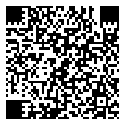

Ein Projekt von Marco Hoffmann
3D-Druck aus meiner Werkstatt in Donaueschingen
Ich fertige Ersatzteile, kleine Serien und Ideen aus Kunststoff – ruhig, sorgfältig und Schritt für Schritt.

Leistungen
Von der ersten Idee bis zum ersten funktionierenden Teil: FDM-3D-Druck mit ehrlicher Einschätzung, welche Schritte sinnvoll sind.
3D-Druck & Prototyping
• FDM‑3D‑Druck (Bambu Lab A1, X1C)
• Auswahl passender Kunststoffe
• Kleine Stückzahlen oder Einzelteile
CAD & Prototyping
• Anpassung bestehender CAD-Daten
• Erstellung einfacher Funktionsmodelle
• Vorbereitung für einen sauberen FDM-Druck
Ich bleibe dran, bis deine Idee Form annimmt und passt.
Projekte
Ausgewählte Referenzen und Fallstudien folgen in Kürze. Wenn du vorab Einblicke möchtest, schreib mir – ich teile gerne Beispiele.
Status
Version 1.0.0 online · Stand: 2025-10-24
In Vorbereitung: Einblicke in laufende Projekte, einfache Downloads und mehr Beispiele aus der Werkstatt.
Kontakt
Ich bin nicht immer sofort erreichbar, aber ich melde mich, sobald ich Zeit habe.
info@warenschmiede.com
Hast du eine Idee, ein kaputtes Teil oder ein Projekt im Kopf? Schreib mir einfach – ich schaue mir an, was möglich ist und melde mich, sobald ich Zeit habe.
WhatsApp öffnet eine Verbindung zu WhatsApp-Servern. Es gelten die Datenschutzrichtlinien von WhatsApp.
Per WhatsApp mit dem Smartphone scannen
Scanne den QR-Code mit deinem Smartphone, um die WhatsApp-Nachricht zu öffnen.
 QR-Code speichern{kind=link}
Impressum
Verantwortlich: Marco Hoffmann · Donaueschingen (Deutschland)
E‑Mail: info@warenschmiede.com
Kleinunternehmer gem. § 19 UStG – keine Ausweisung der Umsatzsteuer.